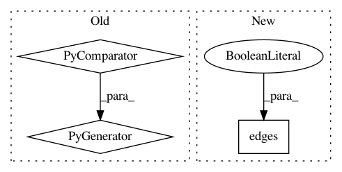

4e2a294ef733417631dbb90f586127a24a043a30,osmnx/utils_graph.py,,add_edge_lengths,#Any#Any#,146
Before Change
// extract the edges" endpoint nodes" coordinates
try:
coords = (
(u, v, k, G.nodes[u]["y"], G.nodes[u]["x"], G.nodes[v]["y"], G.nodes[v]["x"])
for u, v, k in G.edges
)
except KeyError: // pragma: no cover
missing_nodes = {
str(i)
for u, v, _ in G.edges(keys=True)
After Change
coords = np.array(
[
(u, v, k, G.nodes[u]["y"], G.nodes[u]["x"], G.nodes[v]["y"], G.nodes[v]["x"])
for u, v, k in G.edges(keys=True)
]
)
except KeyError: // pragma: no cover
missing_nodes = {
In pattern: SUPERPATTERN
Frequency: 3
Non-data size: 3
Instances
Project Name: gboeing/osmnx
Commit Name: 4e2a294ef733417631dbb90f586127a24a043a30
Time: 2020-11-19
Author: boeing@usc.edu
File Name: osmnx/utils_graph.py
Class Name:
Method Name: add_edge_lengths
Project Name: stellargraph/stellargraph
Commit Name: 956f06cd7860dd5387411c28890d87c70dcd8f42
Time: 2020-01-14
Author: Huon.Wilson@data61.csiro.au
File Name: tests/layer/test_rgcn.py
Class Name:
Method Name: get_As
Project Name: gboeing/osmnx
Commit Name: 08884e278540cc3b3cbe780f6695bc8cbb4c05b6
Time: 2020-12-02
Author: boeing@usc.edu
File Name: osmnx/utils_graph.py
Class Name:
Method Name: add_edge_lengths